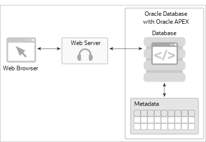

3.1 About APEX Architecture
Oracle APEX uses a simple architecture in which pages are dynamically generated using metadata stored within the Oracle database.
About the APEX Architecture
The APEX architecture consists of a web browser, Oracle REST Data Services (the web server), and an Oracle database containing APEX. The major advantage of this architecture is the separation of the mid-tier and the database tier.

Description of the illustration apex-arch.png
The web server, Oracle REST Data Services, functions as a communications broker between the web browser and the APEX objects in the Oracle database by mapping browser requests into database stored procedure calls.
Once fully installed, a Uniform Resource Locator (URL) is defined for both developers and end users to access APEX. Users require only a web browser and the required URL. No additional client software is required.
About Oracle REST Data Services
Oracle REST Data Services (ORDS) (formerly known as Oracle Application Express Listener) is a J2EE application which communicates with the Oracle database by mapping browser requests to the APEX engine database over a SQL*Net connection.
Oracle REST Data Services is fully supported when deployed in a standalone mode as well as when deployed into Oracle WebLogic Server or Apache Tomcat application servers.
Note:
There are licensing costs associated with Oracle WebLogic Server.See Also:
- Web Server Requirements
- Installing and Configuring APEX and Oracle REST Data Services
- Introduction to Oracle REST Data Services in Oracle REST Data Services Developer's Guide
- Installing and Configuring Oracle REST Data Services in Oracle REST Data Services Installation and Configuration Guide
Parent topic: APEX Installation Overview